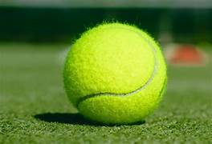

Tennis is a sport either individually or in pairs, where players use a racket to hit a ball over a net, trying to make the ball land in the opponent's court.
Matches are played in sets, where players aim to win six games to take a set. The player with the most sets wins the match. The ball must be hit over the net and into the designated area.
Roger Federer
Rafael Nadal
Serena Williams
Novak Djokovic
Popular tennis tournaments include the Grand Slam events such as Wimbledon, the US Open, the French Open, and the Australian Open.